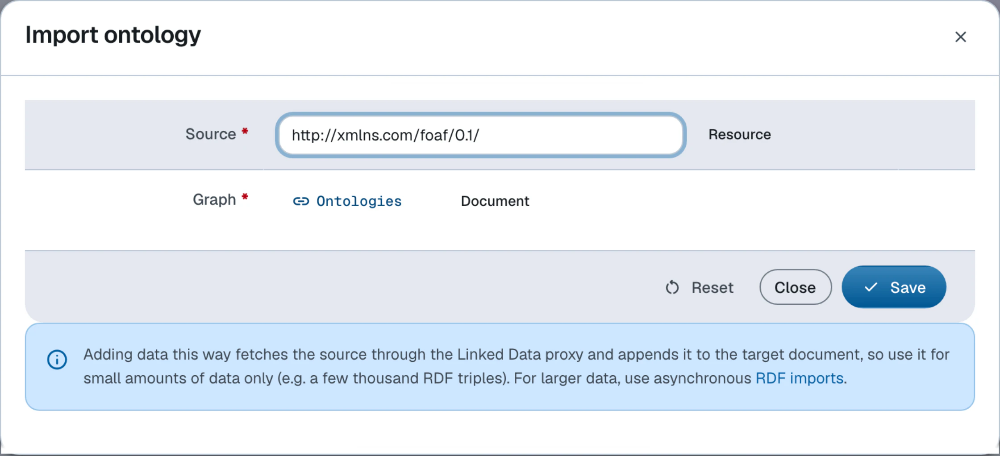

Ontologies
Classes, constructors, constraints and properties of the dataspace's domain model
Ontologies
Ontologies are sets of domain concepts. The domain can span both documents (information resources) and abstract/physical things (non-information resources).
Ontologies can import other ontologies, both user-defined
and system ones provided by LinkedDataHub. The dataspace's namespace ontology is resolved as a native owl:imports union graph —
the transitive closure of its imports — which is cached per ontology URI. No inference
is materialized: the terms are served exactly as declared.
An ontology URI is resolved against the store first and the platform's bundled copies
second: a document in the admin dataspace that declares
the ontology (<uri> a owl:Ontology) is the graph that resolves, even for a vocabulary the platform ships a copy of.
That is what lets
an imported vocabulary and its annotations live in one document under the vocabulary's
own URI.
Package ontologies join the dataspace's imports closure automatically. They are derived from
the dataspace's
ldh:import declarations at ontology load time and declared as owl:imports of the namespace ontology, so they resolve
like any other import. On the first request after the import, the package ontology
is materialized: copied verbatim into a document under the
admin dataspace's ontologies/ container, named after the package's path (ontologies/editor-taxonomy/ for the taxonomy editor),
with the ontology as its foaf:primaryTopic. From then on that document is what the closure resolves the package ontology to,
and its constructors,
constraints and views are edited like the namespace ontology's. A later change to
the published package does not reach the dataspace until the document
is deleted, after which the next request materializes the package again.
owl:imports with uploaded files
Do not use owl:imports declarations that point to paths under uploads/. This can cause circular dependency deadlocks
during system initialization, as the ontology loading process cannot access uploaded
files without creating a circular reference.
Instead:
- Host ontologies as proper documents (not uploaded files)
- Import them using their document URIs
- If you need to use an ontology that was uploaded, create it as a proper ontology document first
For more information, see the file upload documentation.
Main ontology properties:
- Imports
- The URI of another ontology whose terms are pulled into this ontology's imports closure
(
owl:imports) - Version
- Version identifier of the ontology (
owl:versionInfo)
System ontologies
| Ontology | Title | Prefix |
|---|---|---|
https://w3id.org/atomgraph/linkeddatahub/default# |
Default | def: |
https://w3id.org/atomgraph/linkeddatahub/dataspaces# |
Dataspaces | lds: |
https://w3id.org/atomgraph/linkeddatahub/admin/acl# |
Access control | lacl: |
https://w3id.org/atomgraph/linkeddatahub/admin# |
Admin | adm: |
https://w3id.org/atomgraph/linkeddatahub# |
LinkedDataHub | ldh: |
https://w3id.org/atomgraph/linkeddatahub/document-hierarchy# |
Document hierarchy | dh: |
Classes
Classes are RDFS/OWL classes declared in the dataspace's namespace ontology. Their instances live in the dataspace dataset.
The main class properties, explained in the sub-sections below:
- Constructors
- Queries that construct a new class instance
- Constraints
- Commands or command templates that validate a class instance
Constructors
Constructors are SPARQL CONSTRUCT queries that serve as templates for class instances.
They specify the properties (both mandatory and optional) that the instance is supposed
to have, as well as expected datatypes of their
values. Constructors drive the resource creation and editing forms. A class can have
multiple constructors.
The Northwind demo wires a constructor onto schema:Product, which is what makes the Product create form offer the right controls:
schema:Product spin:constructor :ProductConstructor ;
spin:constraint :MissingName .
:ProductConstructor a ldh:Constructor ;
rdfs:label "Product constructor" ;
dct:title "Product constructor" ;
sp:text """
PREFIX schema: <https://schema.org/>
PREFIX dct: <http://purl.org/dc/terms/>
PREFIX xsd: <http://www.w3.org/2001/XMLSchema#>
CONSTRUCT {
$this dct:title [ a xsd:string ] ;
schema:name [ a xsd:string ] ;
schema:identifier [ a xsd:string ] ;
schema:description [ a xsd:string ] ;
schema:category [ a schema:ProductGroup ] ;
schema:provider [ a schema:Corporation ] ;
schema:offers [ a schema:Offer ] .
}
WHERE {}""" ;
rdfs:isDefinedBy : .
Source: admin/model/ns.ttl
A constructor can also supply a default value — the built-in ldh:XHTML constructor seeds new blocks with an empty XHTML literal:
PREFIX rdf: <http://www.w3.org/1999/02/22-rdf-syntax-ns#>
CONSTRUCT {
$this rdf:value "<div xmlns=\"http://www.w3.org/1999/xhtml\"></div>"^^rdf:XMLLiteral .
}
WHERE {}
LinkedDataHub reuses SPIN constructors for the implementation, but adds a
special syntax convention using blank nodes to indicate the expected resource type
([ a ex:Person ]) or literal datatype
([ a xsd:string ]). The magic variable $this refers to the instance being constructed. It starts as a blank node
resource and is skolemized to a URI when the form is submitted to the server.
Note that classes inherit constructors from superclasses at runtime. A subclass constructor only needs to declare the properties its superclasses do not already declare.
Constructor instances are instantiated client-side: the constructors of the resource's
types (including the superclass closure) are expanded
onto a single instance. For that to work, a constructor has to have an empty WHERE clause, as in the example above.
Constraints
Constraints validate a document as a write leaves it. Two kinds are supported, and
both are checked on every write:
SPIN constraints — SPARQL queries or
SPIN command templates attached to a class with
spin:constraint — and SHACL shapes. A SPIN constraint applies to
instances of the class it is declared on and reports violations —
missing mandatory properties, malformed values and so on. For example, an instance
of
dh:Item without dct:title will fail validation because titles are mandatory for LinkedDataHub documents.
The most common constraint shape is the missing-property check. The Northwind demo requires every Product to have a name:
:MissingName a ldh:MissingPropertyValue ;
rdfs:label "Missing schema:name" ;
sp:arg1 schema:name ;
rdfs:isDefinedBy : .
Submitting a Product without schema:name is then rejected with 422 Unprocessable Entity, and the response body
describes the violation in RDF:
[ a spin:ConstraintViolation ;
rdfs:label "Missing schema:name" ;
spin:violationRoot <#this> ;
spin:violationPath schema:name ] .
Classes inherit SPIN constraints from superclasses. SHACL shapes declared in the ontology (or in any ontology of its imports closure) are validated with Jena SHACL alongside the SPIN constraints, and a violation is likewise rejected with 422 Unprocessable Entity.
What is validated is the document as it will be written, not the request body alone.
A PUT carries the whole document, a
POST is checked merged with the triples the document already holds, and a PATCH is checked on the graph its update
produces. A PATCH that adds a schema:description to a Product therefore passes without repeating its name, and one that
deletes the name is rejected. A PATCH cannot remove a resource's rdf:type either, since that would take the resource
out of its class's constraints. Imports write through the same methods and are held to the same check.
A write is rejected whenever the resulting document violates a constraint, including a violation that was there before the write. A document left invalid by a later change to the ontology accepts only a write that repairs every violation it has. The 422 body describes the violating resources alone, not the whole document, so it names what has to be repaired.
Constraints are evaluated over the written document's own graph. A constraint cannot look into other documents, and writing another document never re-validates this one.
Properties
You can define new properties. Like classes, properties are declared in the dataspace's namespace ontology. The expected values of a property on a class are described either with a SPIN property constraint (a mandatory-property check) or with an OWL restriction, both of which the creation and editing forms enforce. A property can also carry a view that lists the resources it relates.
Restrictions
An owl:Restriction pins the cardinality of a property. The Northwind model, for example, declares its
properties with
domains and ranges, and pins the sales-rep cardinality with a restriction — every
order has exactly one:
schema:broker a owl:ObjectProperty ;
rdfs:label "Sales rep";
rdfs:domain schema:Order ;
rdfs:range schema:Person ;
rdfs:isDefinedBy : .
[] a owl:Restriction ;
owl:onProperty schema:broker ;
owl:minCardinality 1 ;
owl:maxCardinality 1 ;
rdfs:isDefinedBy : .
Source: admin/model/ns.ttl
Views
A property can carry a view that lists the resources it relates: ldh:view attaches
the view in the property's forward direction, ldh:inverseView in its inverse. The view is stored in no document. LinkedDataHub
derives it whenever it renders a resource, and appends it to that resource's row.
Which resources get the view is decided by the property's declaration, not by the
data. An ldh:view renders on every resource
typed with the property's rdfs:domain, an ldh:inverseView on every resource typed with its rdfs:range,
and a domain or range inherited through rdfs:subPropertyOf counts as well. The resource does not have to carry the property, and a
property with no domain or range never renders its view. In the view's query, $about is bound to the resource the view is
rendered on.
The Northwind model lists a customer's orders on the customer, through the inverse
of schema:customer, whose range is
schema:Corporation:
schema:customer a owl:ObjectProperty ;
rdfs:domain schema:Order ;
rdfs:range schema:Corporation .
schema:customer ldh:inverseView :OrdersFromCustomer .
:OrdersFromCustomer a ldh:View ;
dct:title "Orders from this customer" ;
spin:query :SelectOrdersFromCustomer ;
ac:mode ac:TableMode ;
ldh:showWhenEmpty false .
:SelectOrdersFromCustomer a sp:Select ;
sp:text """
SELECT DISTINCT ?order
WHERE { GRAPH ?graph { ?order schema:customer $about ; schema:orderDate ?orderDate } }
ORDER BY DESC(?orderDate)""" .
Source: admin/model/ns.ttl
Since the view renders on every customer, ldh:showWhenEmpty false hides it on a customer that has placed no orders. The view's
ac:mode fixes its layout mode, and the view renders a Create button for
inline creation of the class at the property's other end.
The attachments are read from the namespace ontology and its imports closure, so a view declared in ns.ttl and one declared in a package ontology behave the same. A derived view has no edit or drag controls: it is changed by editing its declaration in the ontology.
Importing external vocabularies
The Import ontology action loads an external vocabulary into a document of the admin dataspace and derives
instance
constructors for its classes. The vocabulary stays in that document, under its own URI and with
its own header, and the
derived constructors are appended beside it; the document names the vocabulary as
its foaf:primaryTopic rather than claiming to be an ontology
itself. The dataspace's namespace ontology imports the vocabulary URI, which resolves
to that document because it declares the vocabulary — so the
constructors are edited where the vocabulary is, and nothing has to be re-fetched
from the network or a bundled copy.

Importing the SKOS vocabulary, for example, leaves the target document with content of this shape (abridged):
<> a dh:Item ;
foaf:primaryTopic <http://www.w3.org/2004/02/skos/core> . # the document is about the vocabulary
<http://www.w3.org/2004/02/skos/core> a owl:Ontology . # the vocabulary's own header and terms follow
skos:Concept spin:constructor [ a ldh:Constructor ;
sp:text """
PREFIX skos: <http://www.w3.org/2004/02/skos/core#>
PREFIX xsd: <http://www.w3.org/2001/XMLSchema#>
CONSTRUCT {
$this skos:prefLabel [ a xsd:string ] ;
skos:broader [ a skos:Concept ] .
}
WHERE {}""" ] . # …one derived constructor per class
Management
| Action | CLI command |
|---|---|
| Create ontology | ldh admin create ontology |
| Import external vocabulary | ldh admin import ontology |
| Add ontology import | ldh admin add ontology-import |
| Clear ontology from cache | ldh admin clear ontology |
| Create class | ldh admin add class |
| Add constructor | ldh admin add constructor |
| Add property constraint | ldh admin add property-constraint |
| Add restriction | ldh admin add restriction |
To evolve your dataspace's model in practice, follow the Change model guide.